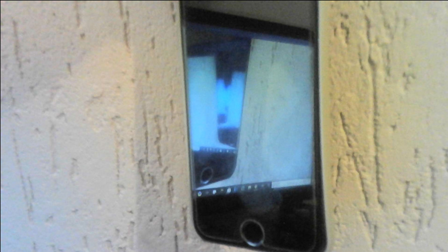
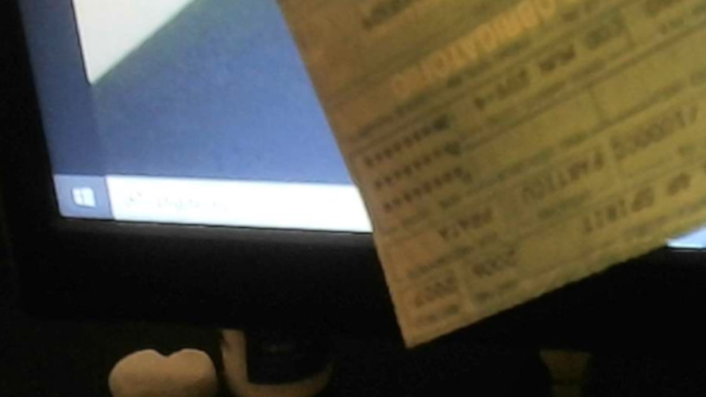
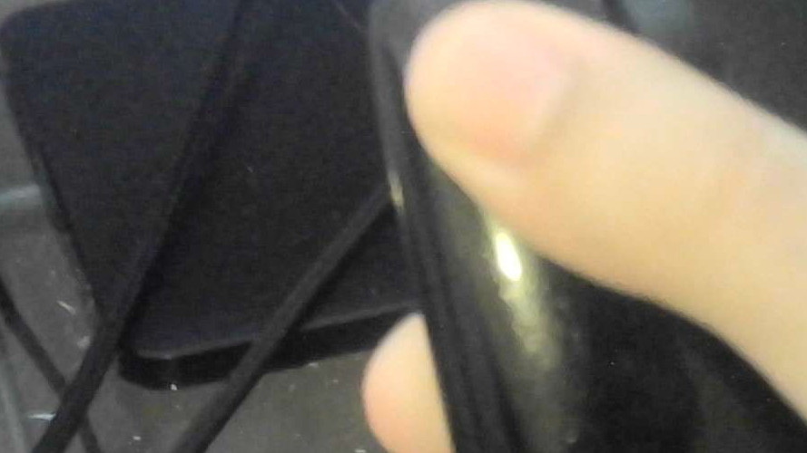
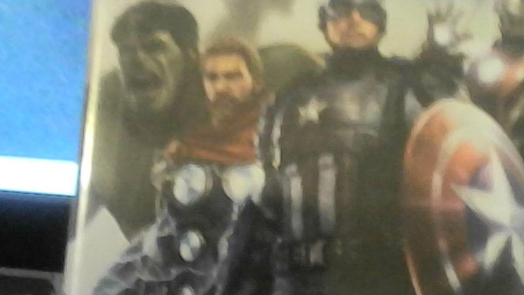
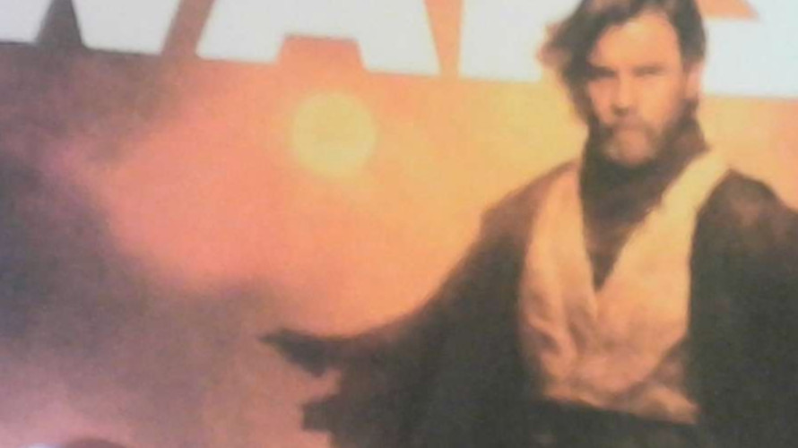

Eu pesquisei fontes sobre meu pai, Edvaldo, as fontes são as seguintes:
O celular mudou a vida do meu pai, ele conseguiu conversar com amigos, ver vídeos e jogar jogos, o celular é essencial na vida dele.
O documento foi essencial na vida do meu pai quando ele foi na autoescola, e tirou sua primeiro documento de motorista, dai em diante ele conseguiu nos levar a diversos lugares.
Meu pai comprou um mouse, para facilitar a sua jogabilidade nos jogos e suas pesquisas nos navegadores do compuador e sua programação.
Quando meu pai era criança, ele gostava de jogar muito jogos, e quando eu nasci, eu jogo igual ao meu pai.
Ao longo da vida do meu pai, ele gotou de ler muitos livros e nos dias de hoje ele ainda gosta de ler livros de programação, para ajudar ele no assunto.
